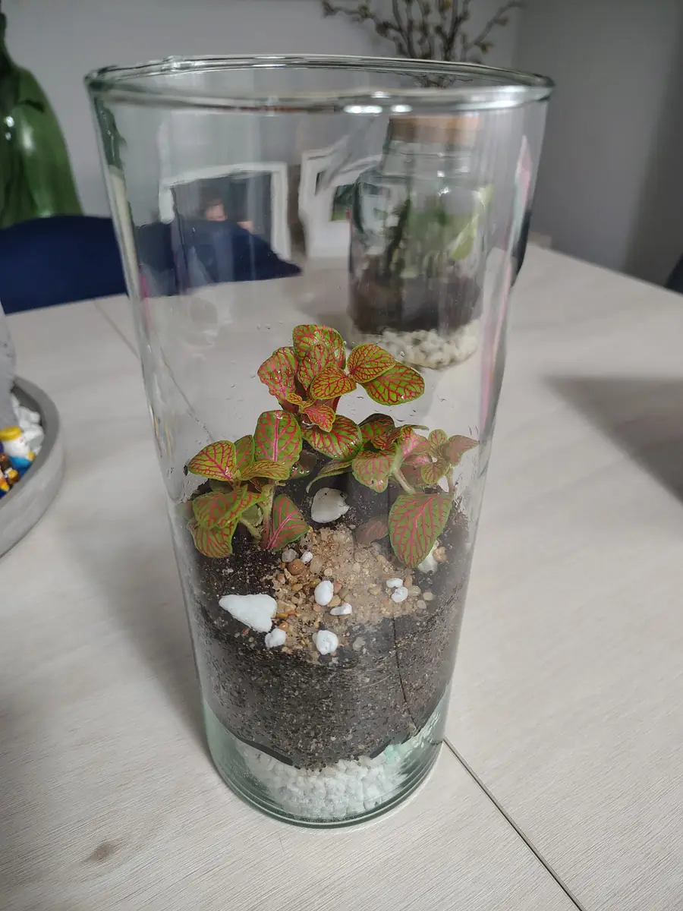
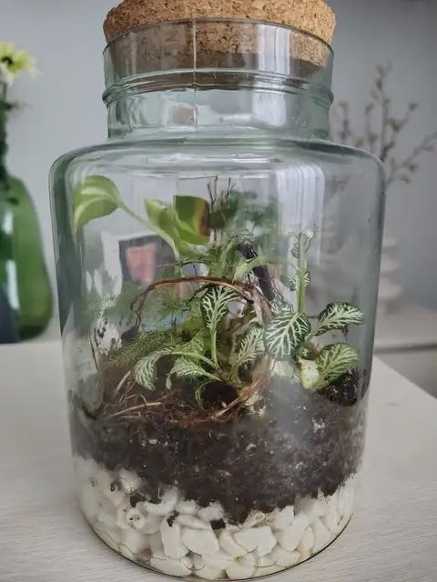

Elegir las plantas es la parte más divertida de montar un terrario, y también donde más se falla: no todas las plantas sirven para todos los terrarios. La regla que lo decide casi todo es si el terrario es cerrado (humedad alta) o abierto (aire de la habitación). Aquí tienes qué plantas encajan en cada caso.

Una Fittonia rojiza en una urna cilíndrica, una de las plantas más fiables para terrarios cerrados.
1. Para un terrario cerrado (mucha humedad)
En un cerrado el aire es muy húmedo y casi no se riega. Elige plantas pequeñas que amen la humedad y toleren poca luz directa:
- Fittonia: la reina de los terrarios; mira sus cuidados completos.
- Musgo: tapiza el suelo y retiene la humedad (más en Musgo en terrario).
- Helecho culantrillo y otros helechos pequeños: les encanta una humedad ambiental alta.
- Ficus pumila: trepadora de hoja diminuta que tapiza el cristal; hay que podarla.
- Peperomia pequeña: hojas carnosas y compactas, muy resistente.
2. Para un terrario abierto (aire de casa)
En un abierto el ambiente es más seco, así que cambia el criterio: plantas que aguanten el aire seco y no necesiten tanta humedad.
- Suculentas y cactus: poca agua y mucha luz; necesitan un sustrato más arenoso.
- Haworthia y Sansevieria pequeña: aguantan casi todo.
- Peperomia: también va bien en un abierto.
- Pothos joven: funciona mientras sea pequeño; luego se sale del tarro.
- Tillandsias (plantas aéreas): no necesitan tierra; se pulverizan un par de veces por semana.
Todo el cuidado de este tipo de montaje lo tienes en Cómo cuidar un terrario abierto.
3. Combinaciones que no funcionan
- Suculentas en un terrario cerrado: la humedad las pudre.
- Fittonia o helechos en uno abierto y sin pulverizar: se secan.
- Mezclar plantas de humedad con plantas de sequedad en el mismo tarro.
- Plantas grandes de crecimiento rápido (el pothos adulto, por ejemplo): acaban ahogando al resto.
Guía rápida para decidir
- Tarro cerrado con poca luz: Fittonia + musgo.
- Tarro cerrado alto: añade un helecho pequeño o ficus pumila para dar altura.
- Jarrón abierto con mucha luz: suculentas o haworthia sobre sustrato arenoso.
- Abierto con luz media: peperomia y pothos joven, y vigila el riego.
4. Cuántas plantas poner
Menos de las que piensas. En un tarro mediano suelen bastar 2 a 4 plantas pequeñas más una capa de musgo; todas necesitan espacio para crecer. Con la calculadora de terrario puedes estimar cuánta tierra y cuántas plantas caben en tu recipiente. Una forma barata de conseguirlas es dividir una sola maceta, como te cuento en Cómo dividir una Fittonia.
5. Antes de plantar: limpieza y cuarentena
Las plantas de vivero pueden traer plagas. Lávales las raíces, retira hojas dañadas y, si puedes, déjalas unos días en cuarentena. Un terrario cerrado es un entorno muy favorable para cualquier bicho que entre. Si luego aparece moho, mira Moho en el terrario.
Preguntas rápidas
¿Se pueden poner plantas carnívoras en un terrario? Algunas sí, pero tienen necesidades muy específicas de luz y agua sin minerales. No son una buena primera opción.
¿Qué planta es la más fácil para empezar? La Fittonia en un cerrado y la peperomia o una suculenta en un abierto.
¿Puedo mezclar Fittonia y musgo? Sí, es una de las combinaciones más habituales y funcionan muy bien juntas.
¿Necesito luz artificial? Si no tienes ventana luminosa, una luz LED de cultivo pequeña ayuda. Evita el sol directo.
Te puede interesar: Fittonia: cuidados, riego y qué hacer cuando se desmaya · Musgo en terrario: tipos, cuidados y por qué se pone marrón · Cómo montar tu primer terrario cerrado

¿Prefieres que te lo monte yo?
Hago terrarios cerrados por encargo en la Comunidad de Madrid, desde 25 €.
Ver cómo pedir el tuyo →